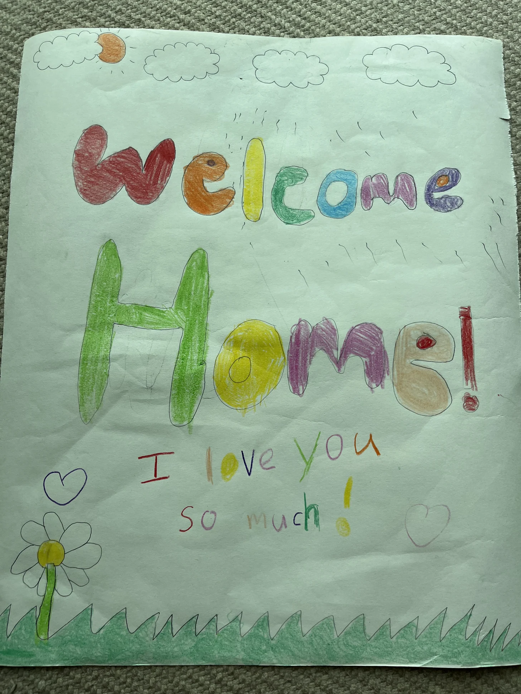

Winning the Best Dad Award?
My eldest is nine. If 15 years old marks the start of greater independence, I have just over 300 weeks left in this season of being a dad.
15 September 2026

My kids are 9, 7, and 4 this year.
Let’s assume that by 15 years old, they will be more independent and spending much less time at home. For my eldest, that gives me about six years. That’s just over 300 weeks.
My younger two give me a bit more time. But the first clock is already running and I think that is my window to try to win the “Best Dad Award.”
There is no real trophy. What matters is how the kids feel about the connection between us. They are the ultimate judges.
And to be clear, this is aspirational. It is not an award I think I have already won. I’m still a WIP, but I think I’m doing alright thanks to the support of my super awesome wife.
I guess to “win,” I need to give them my time and be truly present. Even when tantrums and emotions run high, which is especially difficult for me. I cannot stand illogical thoughts and I cannot stand people breaking promises.1 And kids seem to be very good at both.
Being present with the kids and trying to win the Best Dad Award creates a trade-off. I cannot be organizing my life around building the best product or company. Sadly, time is a finite resource. At some point, I have to close the laptop and switch my mind into “daddy mode” so I can meaningfully engage with my little humans.2
But life seems to be suggesting for me to slow down and be present (thank you!?).3
Building for them
Building stuff for the kids lets me be daddy and put my builder energy to use. A month ago, I made brain games for them. They had fun playing it, although this created another tension because we did not want them playing too much.
So I stopped working on it. :(
Some friends and family played it too. So did a handful of people on Reddit and X. What’s more interesting is that the kids watched an idea turn into an actual game with their own eyes and saw other people joining in the fun.
It seems like the more important lesson was not the brain game itself. It was showing them the work and leading by example. Things can be built if someone is willing to plan and do the work.4
Can the mind and laptop close?
I am sure I will go back to the “dark side” once in a while, especially when family life becomes challenging.
I’ve noticed a pattern. When things become hard with the kids, I go into work mode to take my mind off it (and then complain to the wife 😩). Then, I feel better, give my all to the family, get burned, and then the cycle repeats.
Maybe that’s how it should be? I don’t know.
Anyway, when I do go back to the “dark side,” I hope I still have the mental strength and wisdom to remember that these little human beings are still works in progress.
Given enough time and patience, they will become a gift to the world. That would mean the world to me.
1 As per my user guide here.
2 I liked this essay by Nicholas Charriere about the struggle between ambition and being a dad.
3 Doors are opening and closing. Haven’t quite found “the one” to fully dedicate myself to yet.
4 Much credits to Codex and the 5.6 Sol model for vibe building the game from scratch, and Impeccable for helping with the UI/UX. I enjoyed using both. The girls and wife also gave ideas on how to improve the games.